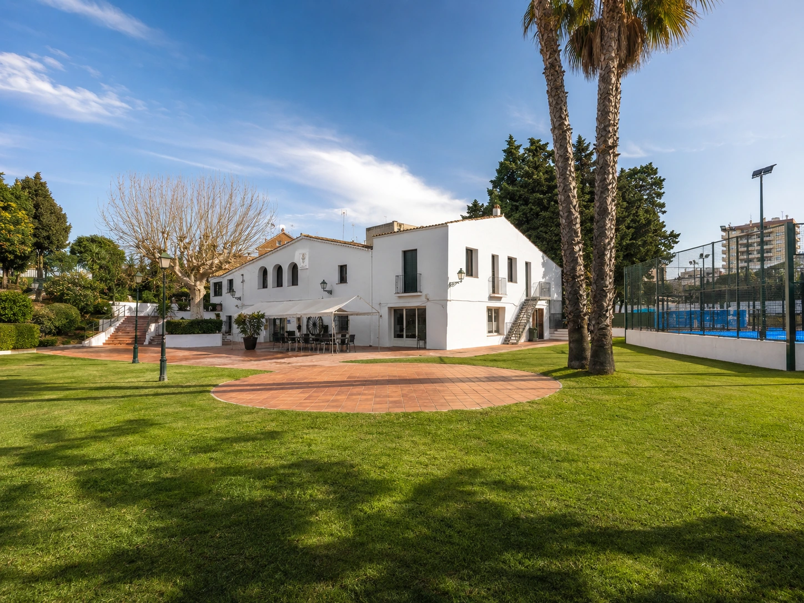
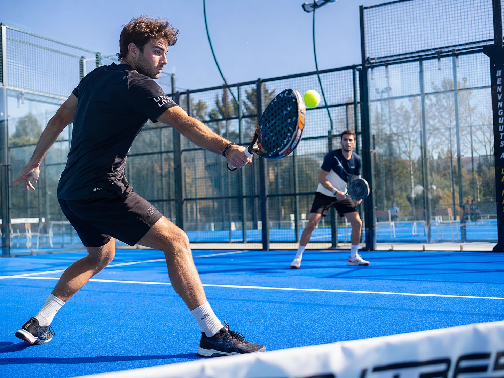
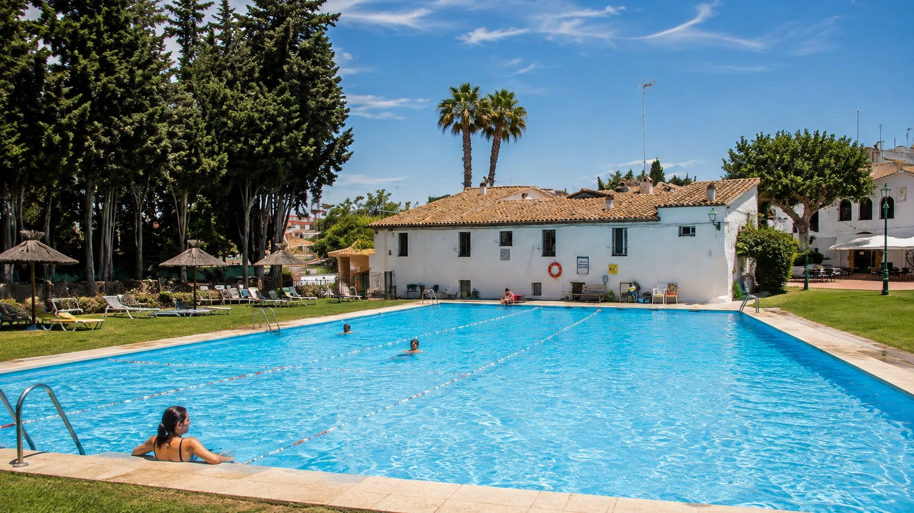
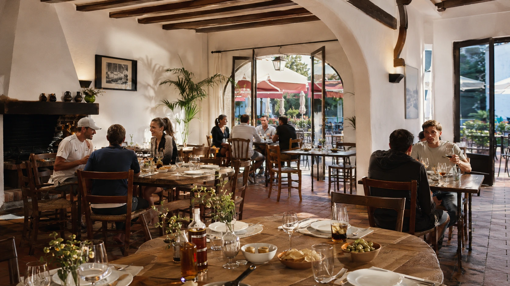
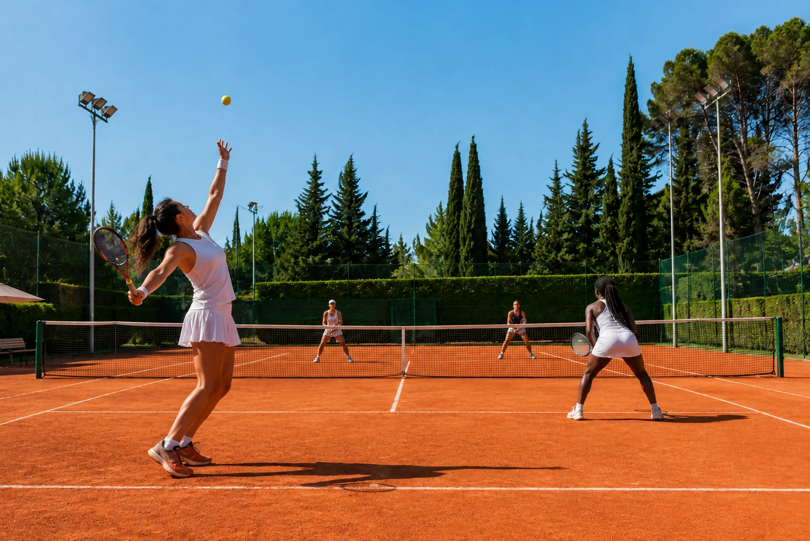
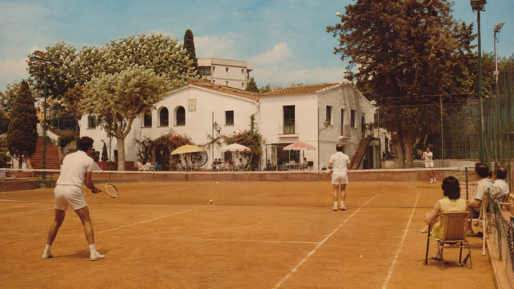
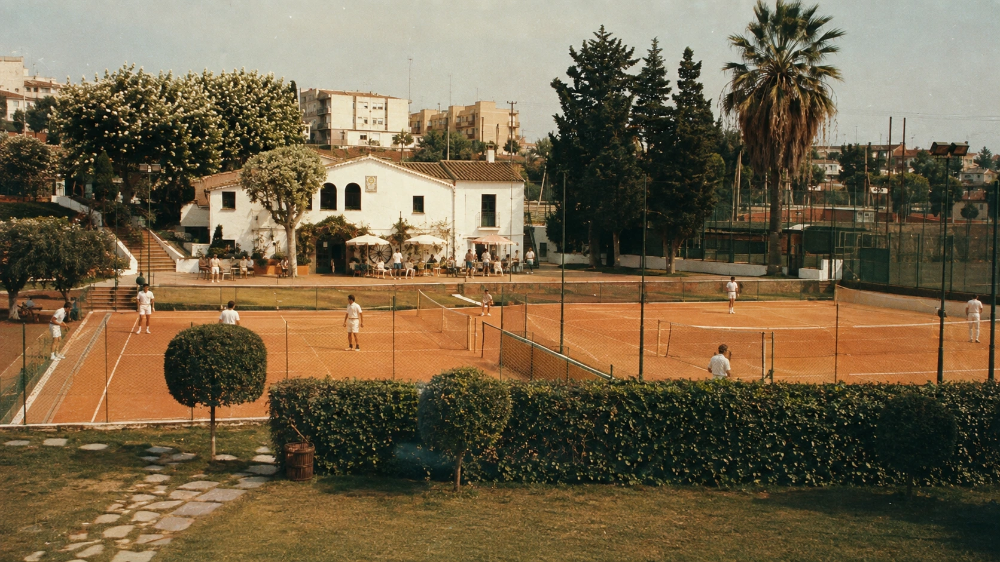
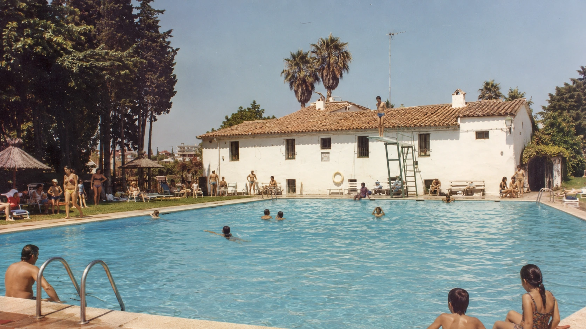
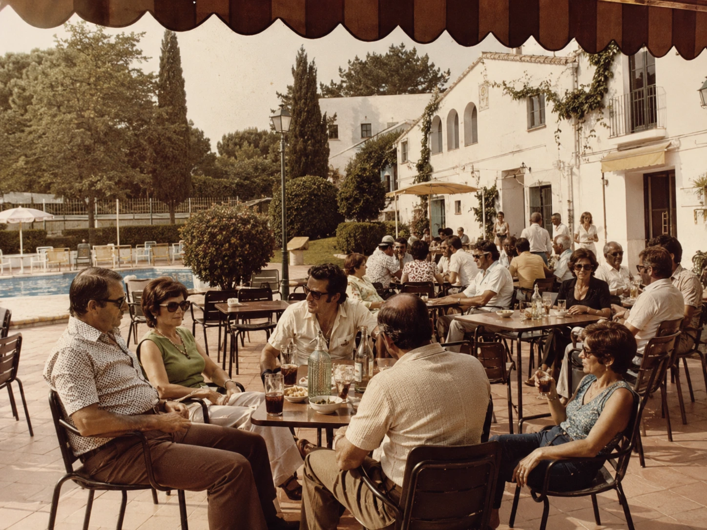
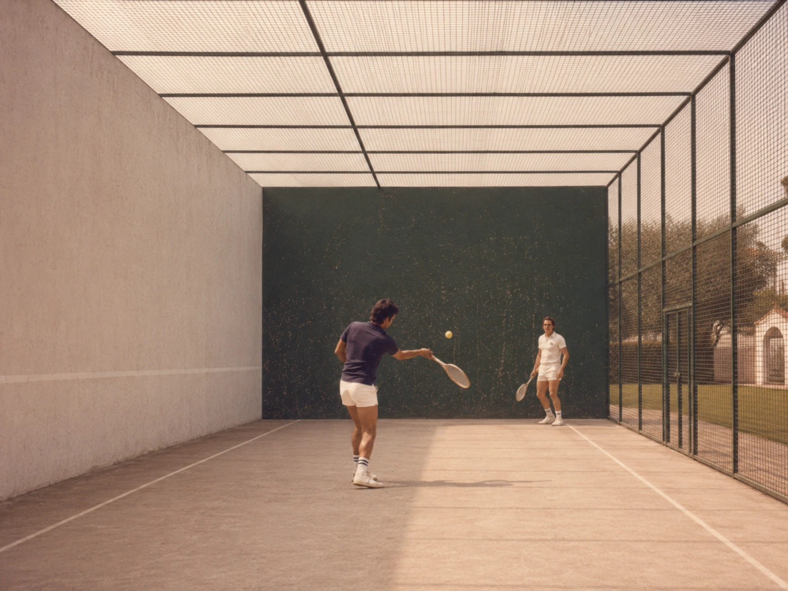

Más de 50 años de deporte
NEW TUROMAR
DEPORTE · GASTRONOMÍA · COMUNIDAD
Mucho más que pádel. Un club para entrenar, disfrutar y compartir momentos inolvidables.
Vive tu club
JUEGA · APRENDE · DISFRUTA · COMPARTE
Todo en un mismo lugar
TODO LO QUE ENCUENTRAS
EN NEW TUROMAR
Instalaciones de primer nivel y una oferta completa para que disfrutes del deporte, el ocio y la vida social durante todo el año.
Pádel
Pistas, escuela, clases, competición y torneos para disfrutar del pádel sea cual sea tu nivel.
Reserva tu pista →Tenis
Pistas de tierra batida, escuela y competición para seguir disfrutando de uno de los deportes que forman parte de la historia del club.
Descubre el tenis →Escuela & formación
Pádel, tenis, karate, campus y actividades para aprender, mejorar y disfrutar del deporte a cualquier edad.
Descubre la escuela →Fitness & bienestar
Zumba, Rumba Fitdance y actividades para mantenerse activo, cuidarse y disfrutar también fuera de la pista.
Ver actividades →Piscina & ocio
Piscina exterior y espacios para relajarse, disfrutar del verano y compartir tiempo dentro del club.
Descubre la piscina →Gastronomía & vida social
Restaurante, terraza y espacios donde terminar el partido, encontrarse con amigos y seguir disfrutando del club.
Descubre la gastronomía →Nuestra historia
MÁS DE 50 AÑOS
DE DEPORTE.
UNA NUEVA ETAPA
POR DELANTE.
Desde 1971, generaciones de familias y deportistas han hecho del Turomar su segunda casa. Hoy iniciamos una nueva etapa para seguir creciendo juntos y convertirnos en una referencia deportiva y gastronómica del Maresme.
Conoce nuestra historia









VIAJE AL PASADO
En el corazón del Maresme
NEW TUROMAR
EN MONTGAT
- ⌖ A 15 minutos de Barcelona
- ◆ A 10 minutos a pie de la playa
- ≈ Un entorno tranquilo para desconectar, disfrutar y hacer deporte
¿NOS VEMOS
EN EL CLUB?
Ven a conocernos sin compromiso y descubre todo lo que New Turomar puede ofrecerte.
Contacta con nosotros ◉ 613 080 962Actualidad